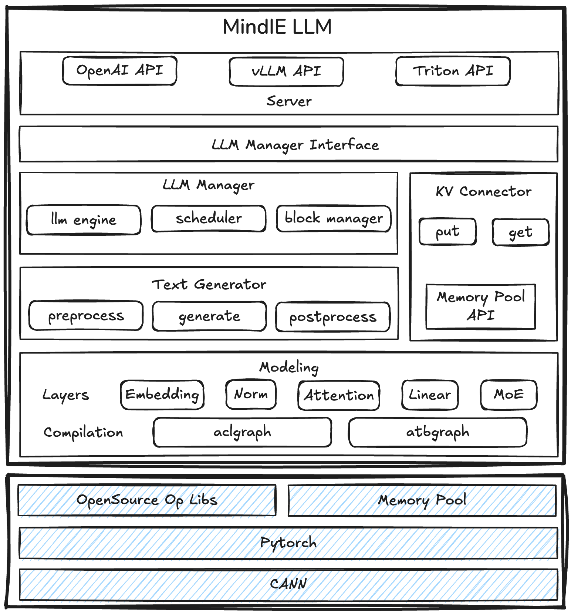

架构总览
MindIE-LLM 由四层组成：北向 Server 暴露协议接入， LLM Manager 负责调度与状态管理，Text Generator 主导推理工作流，Modeling 承担模型与算子。 本章按「请求生命周期」串起这四层。
四层抽象
╔════════════════════════════════════════════════════════════╗
║ Server (C++) ║
║ daemon · endpoint · http_wrapper · grpc_wrapper ║
║ health_checker · single_llm_req_handler ║
╚════════════════════════════════════════════════════════════╝
│ InferRequest
▼
╔════════════════════════════════════════════════════════════╗
║ LLM Manager (C++) ║
║ llm_manager · executor · sequence · scheduler ║
║ block_manager · config_manager · load_balance ║
╚════════════════════════════════════════════════════════════╝
│ Python ↔ C++ 桥接
▼
╔════════════════════════════════════════════════════════════╗
║ Text Generator (Python) ║
║ generator · samplers · adapter · mempool ║
║ plugins(prefix_cache / splitfuse / mtp / la / …) ║
╚════════════════════════════════════════════════════════════╝
│ forward / sample
▼
╔════════════════════════════════════════════════════════════╗
║ Modeling (Python + C++) ║
║ layers (Attention/MoE/Linear/Embedding/Norm) ║
║ compilation (ACLGraph / ATBGraph) ║
║ runtime · ops · tokenizer · lora ║
╚════════════════════════════════════════════════════════════╝
Server 层
对应源码：src/server/。Server 是请求进入引擎的第一站，
负责协议解析、参数校验、健康检查、HTTPS 终结等。它本身不做业务逻辑，把
规范化后的 InferRequest 交给 LLM Manager。
- daemon：进程入口，解析
config.json，依次拉起 endpoint、 gRPC server、http server、健康检查。 - endpoint：协议适配层，包含
http_wrapper/grpc_wrapper/single_llm_req_handler等子模块，用于把 OpenAI / Triton / TGI / vLLM 不同的请求体翻译成统一格式。 - health_checker：暴露
/health、/v2/health/...等探针接口；同时按周期检测 worker 子进程存活。
LLM Manager 层
对应源码：src/llm_manager/、src/engine/、 src/scheduler/、src/block_manager/、 src/sequence/、src/executor/、 src/config_manager/、src/load_balance/。
这一层是 MindIE-LLM 的大脑，关键职责：
- 请求接入：
llm_manager+llm_manager_adapter提供对外 C++ / Python API（详见 C++ 引擎内核）。 - 状态管理：
sequence模块描述每个请求的生命周期 （Sequence、SequenceGroup、LiveInferContext、SchedulingBudget）。 - 调度：
scheduler模块按 FCFS / PDDS / LayerwiseFCFS 等策略组 batch（详见 调度器）。 - 显存管理：
block_manager维护 PagedAttention 块 （详见 KV Cache & Block）。 - 分发执行：
executor+communicator通过 gRPC / IPC 把组装好的 batch 下发给后端 worker。 - 配置中心：
config_manager负责静态 / 动态配置、 ranktable、参数校验。
Text Generator 层
对应源码：mindie_llm/text_generator/。这一层是 Python 实现，负责具体的「自回归推理流水线」：
- preprocess：把请求里的 prompt / image / lora id 等转成 device tensor。
- generate：调用模型 forward → sampler → 后处理，循环直到结束条件。
- postprocess：检测停止符、刷新上下文、释放 KV block。
- plugins：通过插件式接口扩展能力，已内置 Prefix Cache、SplitFuse、 MTP、Lookahead、Memory Decoding、Structured Output、Layer Skipped 等。
- samplers：top-k / top-p / 温度 / repetition penalty / beam search 等。
- mempool：tensor 复用池，减少分配开销。
Modeling 层
对应源码：mindie_llm/modeling/、 mindie_llm/runtime/。这是「真正算」的地方，关注两件事： 正确实现模型与把图编译到昇腾后端。
- layers/：抽象出 Attention、MoE、Linear、Embedding、Norm、Sampling 等通用模块，由具体模型按需组合。
- ops/：底层算子（含
fla、triton、mie_ops）。 - compilation/：双图模式后端
- ACLGraph：基于 CANN ACL 图捕获，适合标准化算子组合。
- ATBGraph：基于 ATB Models 的高度融合 Transformer 图， 性能极致但灵活度受限。
- quantization / lora / tokenizer / model_runner：分别处理量化、 LoRA 切换、分词、模型 runner 入口。
请求生命周期
下图展示一个 OpenAI /v1/chat/completions 请求的完整路径：
1. HTTP request
│
▼
2. endpoint/http_wrapper 解析协议 → 构造 InferRequest
│
▼
3. single_llm_req_handler 校验参数、生成 request_id
│
▼
4. llm_manager 入队 → scheduler 评估能否组 batch
│ ├── block_manager 申请 KV blocks（命中 prefix cache 则跳过 prefill）
│ └── load_balance 决定该请求落到哪个 worker
▼
5. executor 通过 gRPC/IPC 下发组装好的 batch
│
▼
6. Python text_generator.generate()
│ ├── preprocess: tokens → device tensor
│ ├── plugins: prefix cache / splitfuse 注入逻辑
│ ├── modeling.forward(): ATBGraph / ACLGraph
│ ├── samplers.sample(): top-k/top-p
│ └── postprocess: 停止符判定 / 释放 block
▼
7. ModelExecOutputHandler 收回 token → BufferedResponser
│
▼
8. endpoint 把 token 流式 / 一次性回写 HTTP 响应
ATBGraph vs ACLGraph 对比
| 维度 | ATBGraph | ACLGraph |
|---|---|---|
| 性能 | 极致（融合算子） | 较好（图捕获） |
| 支持范围 | 常见 LLM 结构 | 更广，含自定义算子 |
| 开发门槛 | 需理解 ATB Models 接口 | 接近 PyTorch 体验 |
| 适配新模型 | 较慢 | 快 |
| 典型用途 | 线上极致吞吐 | 研究 / 多模态扩展 |
官方架构图
仓库自带一张完整架构示意图（来自官方文档），可作直观参考：

进程与线程模型
典型部署下进程关系：
- 主进程（
mindie_llm_server）：daemon + endpoint + LLM Manager。 - Worker 子进程：每张 NPU 一个 worker，承载 Text Generator + Modeling， 通过 IPC 与主进程通信。
- 调度线程池：scheduler 与 block_manager 在主进程内多线程协作，
受
BackendConfig中maxBatchSize等参数约束。
深入了解
- 服务端与 API — Server 层细节与全部 RESTful 接口
- C++ 引擎内核 — LLM Manager / Executor / Sequence
- 调度器 — 调度策略族与时延预测
- KV Cache & Block — 分配器矩阵与 Prefix Cache
- Python 推理框架 — Text Generator & Modeling 实现